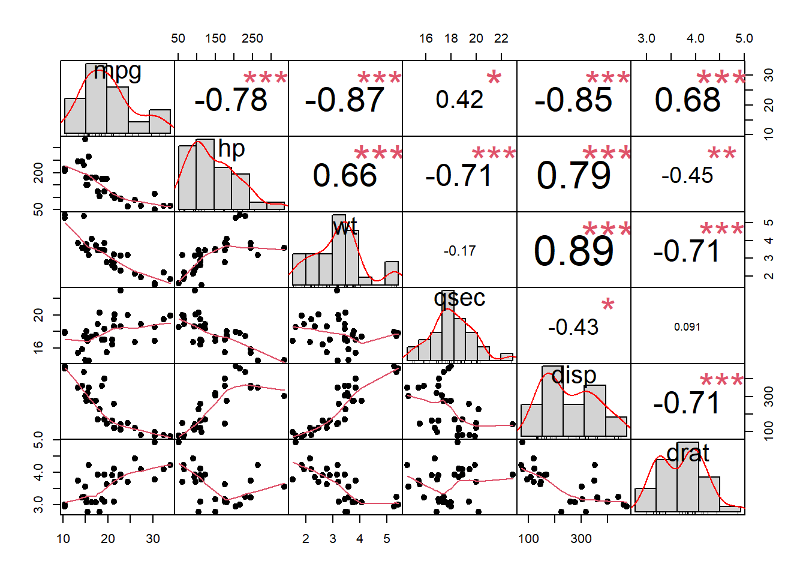
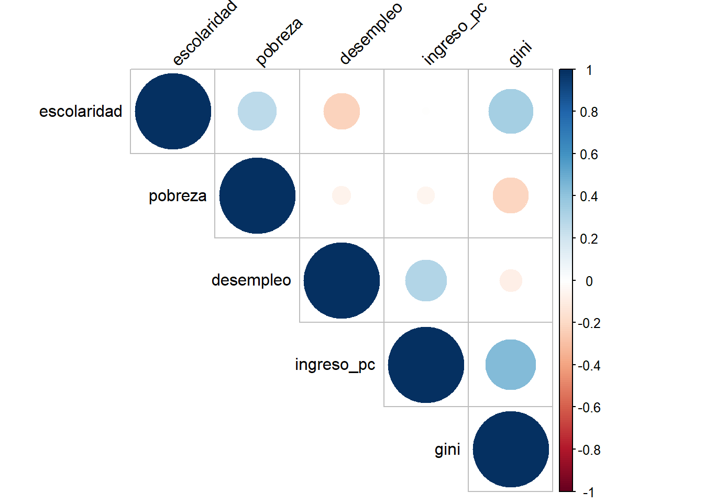

library(tidyverse) # Manipulación de datos
library(psych) # KMO, Bartlett, análisis psicométrico
library(corrplot) # Gráficos de matrices de correlación
library(PerformanceAnalytics)# chart.CorrelationCapitulo_6_Componentes_Principales
1 1. Material descargable
Descargar PDF de contenidos teóricos
e acuerdo al PDF teórico, el Análisis de Componentes Principales (PCA) es un método estadístico que:
- Busca simplificar la complejidad de un espacio de muchas variables (dimensiones) conservando la mayor parte posible de la información.
- Supone que tenemos \(n\) individuos y \(p\) variables \((X_1, \dots, X_p)\).
- Intenta encontrar un número menor de factores subyacentes \(z < p\) (las componentes principales) que expliquen aproximadamente lo mismo que las \(p\) variables originales.
- Pertenece a los métodos de aprendizaje no supervisado (unsupervised learning): no hay una variable respuesta, sólo queremos entender la estructura interna de las variables explicativas.
Intuitivamente, el PCA:
- Busca la dirección de máxima variabilidad de los datos (primera componente).
- Luego busca una segunda dirección ortogonal a la primera que explique la máxima varianza restante, y así sucesivamente.
- Permite mirar los datos tanto desde el punto de vista de los individuos (observaciones) como de las variables (cómo se relacionan entre sí).
1.1 Normalización y matriz de correlación
Cuando las variables están en diferentes unidades, el primer paso es normalizar cada variable:
\[ y_{ik} = \frac{x_{ik} - \bar x_k}{s_k} \]
donde \(\bar x_k\) es la media de la variable \(X_k\) y \(s_k\) su desviación estándar.
Con los datos normalizados construimos la matriz de correlaciones \(R\), que en notación matricial puede escribirse como:
[ R = Y^Y ]
De esta matriz calculamos sus valores propios (\(\lambda_i\)) y vectores propios, que corresponden a:
- Los ejes preferenciales de información (direcciones en las que hay más varianza).
- La proporción de varianza explicada por cada componente:
\[ \text{contribución}_i = \frac{\lambda_i}{\sum_j \lambda_j} \]
2 Configuración inicial en R
2.1 Carga de librerías
En este laboratorio usaremos algunas librerías para facilitar el análisis:
2.2 Ruta de trabajo (opcional)
Mantenemos la misma lógica de ruta de datos que en los laboratorios anteriores de ECO_EPG:
ruta_datos <- "C:/Users/manue/Desktop/lab-econometria/labs_epg/data_epg"
# Puedes revisar el contenido de la carpeta
list.files(ruta_datos) [1] "annos_mantenimiento.xlsx" "auto_peso_consumo.xlsx"
[3] "costos.xlsx" "data_PCA_Decathlon.csv"
[5] "data_PCA_ExpertWine.csv" "Ejemplo1.xlsx"
[7] "Ejemplo2.xlsx" "millaje.txt"
[9] "orange.csv" "tabla_ejemplo_R.xlsx" En este laboratorio usaremos principalmente datasets incluidos en R, de manera que puedas ejecutar el código incluso si no has descargado archivos adicionales.
3 Ejemplo 1: PCA con datos de autos (mtcars)
En este primer ejemplo aplicaremos PCA al dataset mtcars (incluido en R), que contiene información de distintos modelos de autos:
mpg: millas por galón (consumo).
hp: caballos de fuerza.
wt: peso del auto.
qsec: tiempo en 1/4 de milla.
- Entre otras variables.
La idea es resumir varias características técnicas de los autos en unas pocas componentes principales.
3.1 Selección y exploración de variables
data(mtcars)
# Seleccionamos algunas variables numéricas de interés
datos_auto <- mtcars %>%
select(mpg, hp, wt, qsec, disp, drat)
summary(datos_auto) mpg hp wt qsec
Min. :10.40 Min. : 52.0 Min. :1.513 Min. :14.50
1st Qu.:15.43 1st Qu.: 96.5 1st Qu.:2.581 1st Qu.:16.89
Median :19.20 Median :123.0 Median :3.325 Median :17.71
Mean :20.09 Mean :146.7 Mean :3.217 Mean :17.85
3rd Qu.:22.80 3rd Qu.:180.0 3rd Qu.:3.610 3rd Qu.:18.90
Max. :33.90 Max. :335.0 Max. :5.424 Max. :22.90
disp drat
Min. : 71.1 Min. :2.760
1st Qu.:120.8 1st Qu.:3.080
Median :196.3 Median :3.695
Mean :230.7 Mean :3.597
3rd Qu.:326.0 3rd Qu.:3.920
Max. :472.0 Max. :4.930
Tip
Siempre es importante ver el rango y la escala de las variables:
mpgestá en millas por galón.
hpen caballos de fuerza.
wten miles de libras.
qsecen segundos.
Si no normalizamos, las variables con mayor escala dominarán el análisis.
3.2 Matriz de correlación
Antes de hacer PCA miramos la relación entre variables:
cor_auto <- cor(datos_auto)
round(cor_auto, 2) mpg hp wt qsec disp drat
mpg 1.00 -0.78 -0.87 0.42 -0.85 0.68
hp -0.78 1.00 0.66 -0.71 0.79 -0.45
wt -0.87 0.66 1.00 -0.17 0.89 -0.71
qsec 0.42 -0.71 -0.17 1.00 -0.43 0.09
disp -0.85 0.79 0.89 -0.43 1.00 -0.71
drat 0.68 -0.45 -0.71 0.09 -0.71 1.00corrplot(cor_auto,
type = "upper",
order = "hclust",
tl.col = "black",
tl.srt = 45)
chart.Correlation(datos_auto,
histogram = TRUE,
pch = 19)
3.3 Test de Bartlett y KMO
Aplicamos los tests que se mencionan en el PDF teórico:
- Bartlett: contrasta si la matriz de correlación es esférica.
- KMO: evalúa la adecuación del muestreo para análisis factorial/PCA.
psych::cortest.bartlett(cor_auto, n = nrow(datos_auto))$chisq
[1] 181.2473
$p.value
[1] 1.332068e-30
$df
[1] 15KMO(cor_auto)Kaiser-Meyer-Olkin factor adequacy
Call: KMO(r = cor_auto)
Overall MSA = 0.76
MSA for each item =
mpg hp wt qsec disp drat
0.83 0.83 0.70 0.52 0.78 0.85
Nota
- Si el p-value de Bartlett es pequeño, la matriz de correlación es distinta de la identidad, lo que favorece el uso de PCA.
- Un KMO cercano a 1 indica que las variables comparten suficiente varianza común como para aplicar análisis factorial o PCA.
3.4 Normalización de las variables
Normalizamos las variables para que todas queden en escala comparable:
datos_auto_norm <- scale(datos_auto)
head(datos_auto_norm) mpg hp wt qsec disp
Mazda RX4 0.1508848 -0.5350928 -0.610399567 -0.7771651 -0.57061982
Mazda RX4 Wag 0.1508848 -0.5350928 -0.349785269 -0.4637808 -0.57061982
Datsun 710 0.4495434 -0.7830405 -0.917004624 0.4260068 -0.99018209
Hornet 4 Drive 0.2172534 -0.5350928 -0.002299538 0.8904872 0.22009369
Hornet Sportabout -0.2307345 0.4129422 0.227654255 -0.4637808 1.04308123
Valiant -0.3302874 -0.6080186 0.248094592 1.3269868 -0.04616698
drat
Mazda RX4 0.5675137
Mazda RX4 Wag 0.5675137
Datsun 710 0.4739996
Hornet 4 Drive -0.9661175
Hornet Sportabout -0.8351978
Valiant -1.56460783.5 PCA con prcomp
Usamos la función base prcomp, que trabaja sobre la matriz de datos:
pca_auto <- prcomp(datos_auto,
center = TRUE, # restar la media
scale. = TRUE) # dividir por la desviación estándar
summary(pca_auto)Importance of components:
PC1 PC2 PC3 PC4 PC5 PC6
Standard deviation 2.0463 1.0715 0.57737 0.39289 0.3533 0.22799
Proportion of Variance 0.6979 0.1913 0.05556 0.02573 0.0208 0.00866
Cumulative Proportion 0.6979 0.8892 0.94481 0.97054 0.9913 1.00000El summary muestra:
- La desviación estándar de cada componente.
- La proporción de varianza explicada por cada componente.
- La varianza acumulada (muy útil para decidir cuántas componentes retener).
3.6 Valores propios y varianza explicada
Los valores propios se obtienen elevando al cuadrado las desviaciones estándar de las componentes:
eigenvalues <- pca_auto$sdev^2
eigenvalues[1] 4.18739648 1.14811212 0.33335666 0.15436054 0.12479601 0.05197818prop_var <- eigenvalues / sum(eigenvalues)
prop_var[1] 0.697899413 0.191352020 0.055559444 0.025726757 0.020799335 0.008663031acum_var <- cumsum(prop_var)
acum_var[1] 0.6978994 0.8892514 0.9448109 0.9705376 0.9913370 1.00000003.6.1 Gráfico de sedimentación (scree plot)
plot(prop_var,
type = "b",
xlab = "Componente principal",
ylab = "Proporción de varianza explicada",
main = "Gráfico de sedimentación (scree plot)")
abline(h = 0.1, lty = 2, col = "red")
Tip
Ideas típicas para decidir el número de componentes:
- Mantener las componentes que explican en conjunto, por ejemplo, 70%-80% de la varianza.
- Detenerse cuando el scree plot muestra un “codo” evidente.
- Mantener sólo las componentes con valor propio mayor que 1 (criterio de Kaiser) cuando se trabaja sobre matriz de correlación.
3.7 Cargas (loadings) e interpretación
Las cargas son las correlaciones entre las variables originales y las componentes:
pca_auto$rotation PC1 PC2 PC3 PC4 PC5 PC6
mpg -0.4586835 -0.05867609 -0.19479235 -0.78205878 0.1111533 0.35249327
hp 0.4258534 -0.36147576 0.14613554 -0.12301873 0.8057408 0.04771555
wt 0.4386179 0.29953457 0.41776208 -0.10438337 -0.2301541 0.69246040
qsec -0.2528320 0.76284877 0.34059066 -0.04268124 0.4218755 -0.24152663
disp 0.4660354 0.06065296 0.09688406 -0.60001871 -0.2946297 -0.56825752
drat -0.3670963 -0.43652537 0.80049152 -0.02259258 -0.1437714 -0.11277675- Valores altos (en valor absoluto) indican que la variable tiene una gran influencia en esa componente.
- El signo indica dirección de la relación (positiva o negativa).
3.8 Coordenadas de los individuos (scores)
head(pca_auto$x) PC1 PC2 PC3 PC4 PC5
Mazda RX4 -0.8425806 -0.873469391 -0.2282783 0.3742725 -0.51522641
Mazda RX4 Wag -0.8075041 -0.556341552 -0.0126678 0.3336931 -0.44299870
Datsun 710 -1.6850448 0.040006569 -0.1564937 0.4057157 0.03340433
Hornet 4 Drive -0.0964443 1.294377904 -0.5702297 -0.2520788 0.04326023
Hornet Sportabout 1.2915096 0.006516693 -0.5250741 -0.4813192 -0.12822104
Valiant 0.2187309 2.005957905 -0.7258399 0.3136170 0.21465335
PC6
Mazda RX4 0.05293884
Mazda RX4 Wag 0.15771326
Datsun 710 -0.10756126
Hornet 4 Drive -0.18173489
Hornet Sportabout -0.29051949
Valiant -0.09145688Cada fila corresponde a un auto, y cada columna a su coordenada en una componente principal (por ejemplo, PC1, PC2).
3.9 Biplot: individuos y variables
biplot(pca_auto,
scale = 0,
cex = 0.7)
Nota
- Los puntos son los autos (individuos).
- Las flechas representan las variables originales.
- La dirección y longitud de cada flecha muestran cómo cada variable contribuye a las primeras componentes.
4 Ejemplo 2: PCA con datos simulados de indicadores regionales
Ahora construiremos un segundo ejemplo, inventando un conjunto de datos que se parezca a una situación típica en economía o gestión: indicadores para distintas regiones.
Supongamos que medimos para cada región:
ingreso_pc: ingreso per cápita.
desempleo: tasa de desempleo.
escolaridad: años promedio de estudio.
pobreza: porcentaje de población bajo la línea de pobreza.
gini: índice de desigualdad (0–1).
La idea es usar PCA para encontrar patrones conjuntos entre estos indicadores.
4.1 Creación de datos simulados
set.seed(123)
n_regiones <- 16
datos_regiones <- tibble(
region = paste("Region", 1:n_regiones),
ingreso_pc = round(rnorm(n_regiones, mean = 800000, sd = 150000)),
desempleo = round(rnorm(n_regiones, mean = 8, sd = 2), 1),
escolaridad = round(rnorm(n_regiones, mean = 11, sd = 1.5), 1),
pobreza = round(rnorm(n_regiones, mean = 15, sd = 5), 1),
gini = round(rnorm(n_regiones, mean = 0.45, sd = 0.05), 2)
)
datos_regiones# A tibble: 16 × 6
region ingreso_pc desempleo escolaridad pobreza gini
<chr> <dbl> <dbl> <dbl> <dbl> <dbl>
1 Region 1 715929 9 12.3 18.9 0.4
2 Region 2 765473 4.1 12.3 14.6 0.47
3 Region 3 1033806 9.4 12.2 16.3 0.47
4 Region 4 810576 7.1 12 14.9 0.45
5 Region 5 819393 5.9 11.8 14.8 0.5
6 Region 6 1057260 7.6 10.9 21.8 0.55
7 Region 7 869137 5.9 10.5 13.9 0.43
8 Region 8 610241 6.5 10.4 22.6 0.33
9 Region 9 696972 6.7 10 7.3 0.5
10 Region 10 733151 4.6 10.7 17.9 0.41
11 Region 11 983612 9.7 9.1 15.6 0.42
12 Region 12 853972 8.3 14.3 16.1 0.5
13 Region 13 860116 5.7 12.8 16.9 0.44
14 Region 14 816602 10.5 9.3 12.5 0.39
15 Region 15 716624 8.9 10.4 13.3 0.46
16 Region 16 1068037 7.4 10.3 9.9 0.444.2 Exploración inicial
summary(select(datos_regiones, -region)) ingreso_pc desempleo escolaridad pobreza
Min. : 610241 Min. : 4.100 Min. : 9.10 Min. : 7.30
1st Qu.: 729019 1st Qu.: 5.900 1st Qu.:10.38 1st Qu.:13.75
Median : 817998 Median : 7.250 Median :10.80 Median :15.25
Mean : 838181 Mean : 7.331 Mean :11.21 Mean :15.46
3rd Qu.: 897756 3rd Qu.: 8.925 3rd Qu.:12.22 3rd Qu.:17.15
Max. :1068037 Max. :10.500 Max. :14.30 Max. :22.60
gini
Min. :0.3300
1st Qu.:0.4175
Median :0.4450
Mean :0.4475
3rd Qu.:0.4775
Max. :0.5500 4.3 Matriz de correlación
vars_reg <- select(datos_regiones, -region)
cor_reg <- cor(vars_reg)
round(cor_reg, 2) ingreso_pc desempleo escolaridad pobreza gini
ingreso_pc 1.00 0.30 -0.01 -0.06 0.44
desempleo 0.30 1.00 -0.23 -0.06 -0.09
escolaridad -0.01 -0.23 1.00 0.26 0.34
pobreza -0.06 -0.06 0.26 1.00 -0.22
gini 0.44 -0.09 0.34 -0.22 1.00corrplot(cor_reg,
type = "upper",
order = "hclust",
tl.col = "black",
tl.srt = 45)
chart.Correlation(vars_reg, histogram = TRUE, pch = 19)
4.4 Bartlett y KMO
psych::cortest.bartlett(cor_reg, n = nrow(datos_regiones))$chisq
[1] 9.531286
$p.value
[1] 0.4825305
$df
[1] 10KMO(cor_reg)Kaiser-Meyer-Olkin factor adequacy
Call: KMO(r = cor_reg)
Overall MSA = 0.38
MSA for each item =
ingreso_pc desempleo escolaridad pobreza gini
0.40 0.46 0.39 0.30 0.38 4.5 PCA sobre indicadores regionales
pca_reg <- prcomp(vars_reg,
center = TRUE,
scale. = TRUE)
summary(pca_reg)Importance of components:
PC1 PC2 PC3 PC4 PC5
Standard deviation 1.2525 1.2071 1.0262 0.7718 0.57039
Proportion of Variance 0.3138 0.2914 0.2106 0.1191 0.06507
Cumulative Proportion 0.3138 0.6052 0.8158 0.9349 1.000004.5.1 Varianza explicada
eig_reg <- pca_reg$sdev^2
prop_reg <- eig_reg / sum(eig_reg)
acum_reg <- cumsum(prop_reg)
prop_reg[1] 0.31375635 0.29143673 0.21061115 0.11912759 0.06506818acum_reg[1] 0.3137564 0.6051931 0.8158042 0.9349318 1.0000000plot(prop_reg,
type = "b",
xlab = "Componente principal",
ylab = "Proporción de varianza explicada",
main = "Scree plot - indicadores regionales")
4.6 Interpretación de las componentes
pca_reg$rotation PC1 PC2 PC3 PC4 PC5
ingreso_pc 0.6287024 0.2048168 0.3221309 0.471827456 -0.4862035
desempleo 0.1577429 0.5621811 0.5069584 -0.605120552 0.1894515
escolaridad 0.2260606 -0.6701855 0.1702061 -0.549672409 -0.4106557
pobreza -0.2399983 -0.3756731 0.7540961 0.330237323 0.3515011
gini 0.6864021 -0.2274283 -0.2039456 0.003394633 0.6599418
Nota
- Una componente con alta carga positiva en
ingreso_pcyescolaridady carga negativa enpobrezapodría interpretarse como un índice de desarrollo socioeconómico.
- Otra componente con alta carga en
desempleoyginipodría interpretarse como un patrón de inestabilidad laboral y desigualdad.
4.7 Coordenadas de las regiones en el espacio de componentes
scores_reg <- as_tibble(pca_reg$x) %>%
mutate(region = datos_regiones$region)
scores_reg# A tibble: 16 × 6
PC1 PC2 PC3 PC4 PC5 region
<dbl> <dbl> <dbl> <dbl> <dbl> <chr>
1 -1.07 -0.335 1.15 -1.11 -0.00143 Region 1
2 -0.0845 -1.63 -1.17 0.296 -0.190 Region 2
3 1.47 0.260 1.22 -0.319 -0.420 Region 3
4 0.0496 -0.451 -0.148 -0.381 -0.179 Region 4
5 0.611 -0.909 -0.691 0.113 0.342 Region 5
6 1.92 -0.497 1.39 1.33 1.19 Region 6
7 -0.225 0.180 -0.638 0.718 -0.406 Region 7
8 -3.21 -0.387 0.977 0.403 0.141 Region 8
9 0.287 0.742 -2.44 -0.493 0.712 Region 9
10 -1.43 -0.812 -0.434 0.931 -0.00298 Region 10
11 0.160 2.05 0.863 0.575 0.0168 Region 11
12 1.30 -1.46 0.602 -1.43 -0.158 Region 12
13 0.0352 -1.34 0.111 0.0974 -0.678 Region 13
14 -0.705 2.38 0.227 -0.605 -0.0228 Region 14
15 -0.261 0.835 -0.424 -0.792 0.791 Region 15
16 1.16 1.37 -0.600 0.656 -1.14 Region 164.7.1 Gráfico de las regiones en PC1–PC2
ggplot(scores_reg, aes(x = PC1, y = PC2, label = region)) +
geom_hline(yintercept = 0, linetype = "dashed", color = "grey70") +
geom_vline(xintercept = 0, linetype = "dashed", color = "grey70") +
geom_point() +
geom_text(vjust = -0.5, size = 3) +
labs(title = "Regiones en el espacio de las dos primeras componentes",
x = "Componente principal 1",
y = "Componente principal 2") +
theme_minimal()
4.8 Biplot con variables e individuos
biplot(pca_reg,
scale = 0,
cex = 0.7)
5 Cierre del laboratorio
En este laboratorio trabajaste, apoyado en el PDF del Capítulo 6: Componentes Principales, los siguientes aspectos:
- La motivación del PCA como técnica de reducción de dimensión y exploración de datos multivariados.
- La importancia de normalizar las variables cuando están en distintas escalas.
- La construcción de la matriz de correlaciones y el uso de Bartlett y KMO para evaluar si el PCA (o análisis factorial) es razonable.
- El cálculo e interpretación de valores propios, varianza explicada y scree plot.
- La lectura de las cargas (loadings) de las variables y de las coordenadas (scores) de los individuos.
- La interpretación conjunta de individuos y variables a través de biplots.
Estos elementos son la base para aplicar PCA en contextos reales de economía y gestión, donde a menudo trabajamos con muchos indicadores simultáneamente y necesitamos resumir la información de forma clara y robusta.